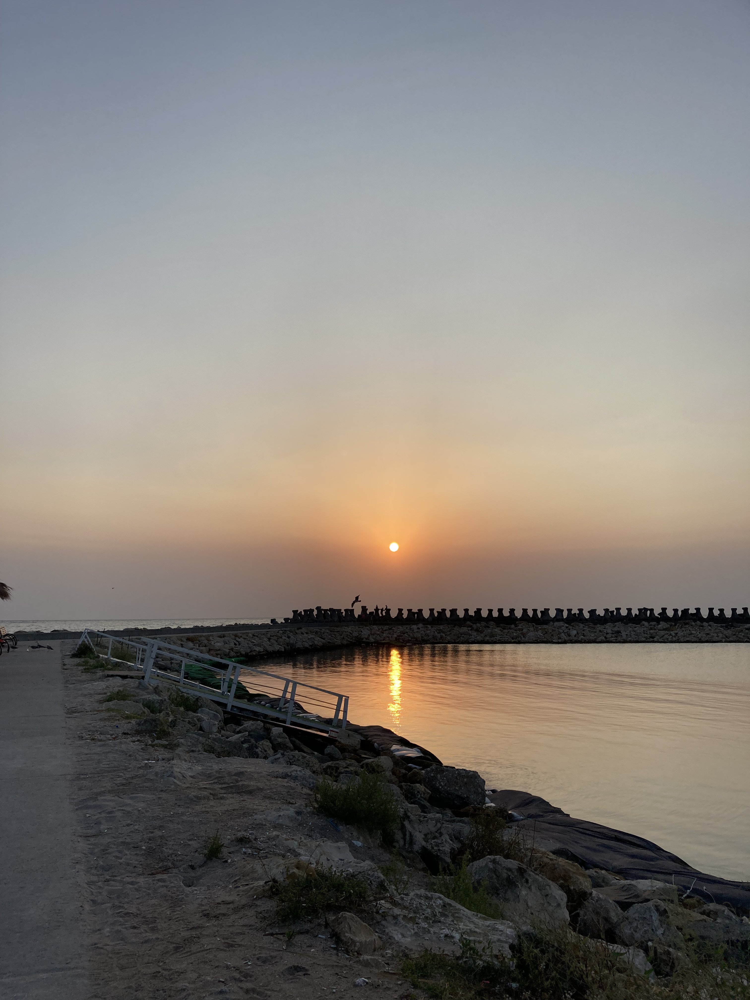

4 septembrie 2024
Costinești
💜 Te iubesc cu toata fiinta acum pentru ca va veni o zi in care nu voi mai putea 💜
Suntem ființe limitate. Pe cât de mult am încerca sa înțelegem infinitul, este imposibil. In lumea noastră, absolut orice are un început și un sfârșit. Iar acest
gând este cel mai greu de acceptat. Conștient poate îl acceptam, dar în adâncul nostru ne este greu. Si totuși cu acest sentiment și cu aceasta conștientizare, ne
irosim limita timpului pentru suparari, gelozii, bani, si asa mai departe. Sunt conștient ca nu vom fi alături la nesfârșit. Fie ca se va întâmplă maine sau peste
zeci de ani, se va întâmplă oricum. Fie ca ne va despărți orgoliul sau moartea, se va întâmplă oricum. Trebuie sa trăim prezentul, Ioana. Nu îl înțeleg, dar știu
ca regretul pierderii este cel mai dureros.